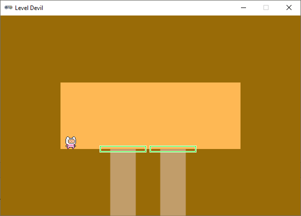
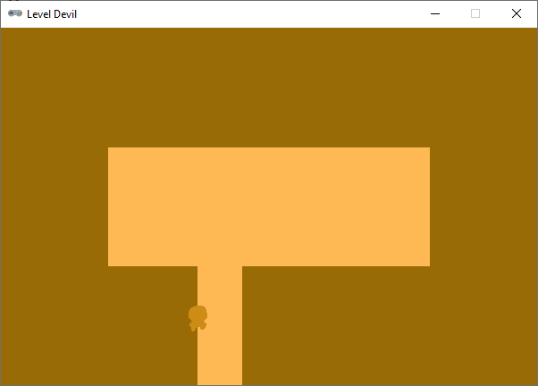
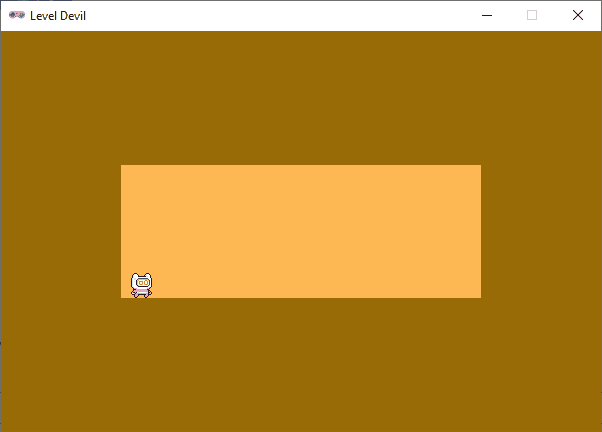

Valkuilen#
In dit deel programmeren we de collisions tussen de speler en de valkuilen. We zorgen ervoor dat de valkuilen actief worden wanneer de speler in de buurt komt en dat de speler daadwerkelijk in de valkuil valt wanneer hij er overheen loopt. Ook moet de speler doodgaan wanneer hij in de valkuil valt.
Activeren#
Een valkuil moet actief worden zodra de speler hem nadert. In de update() zou je kunnen berekenen hoe dicht de speler bij een valkuil is en die actief maken wanneer de afstand kleiner is dan een bepaalde drempel. Een wellicht gemakkelijkere manier is het creëren van een triggerzone rondom elke valkuil. Wanneer de speler die triggerzone betreedt, wordt de bijbehorende valkuil actief. We kunnen zo’n triggerzone maken door een rechthoek te definiëren die iets groter is dan de valkuil zelf. Vervolgens kunnen we controleren of de speler deze triggerzone raakt.

Voor het maken van de trigger zone rectangles kunnen we de inflate() methode van de Rect class gebruiken. Deze methode maakt een nieuwe rechthoek die is vergroot (of verkleind) ten opzichte van de originele rechthoek. Meer info vind je in de Pygame documentatie.
Breid de for loop in de update() functie als volgt uit:
124 # TRAPS
125 for index, trap_rect in enumerate(trap_rects):
126 # animate active traps
127 if index in active_traps:
128 if trap_rect.height < HEIGHT - room_rect.bottom:
129 trap_rect.height += 2
130 # activate trap
131 trigger_zone = trap_rect.inflate(40, 10)
132 if player.colliderect(trigger_zone):
133 active_traps.add(index)
In regel 131 maken we een triggerzone door de valkuil rechthoek ‘op te blazen’ met 40 pixels in de breedte (20 naar links en 20 naar rechts) en 10 pixels in de hoogte (5 naar boven en 5 naar beneden). Met de colliderect() methode controleren we of de speler de triggerzone raakt. Als dat het geval is, voegen we de index van die valkuil toe aan de set van actieve valkuilen.
In de val vallen#
Op dit moment kan de speler nog over de valkuilen lopen zonder af te gaan. In de update() functie moeten we controleren of de speler een actieve valkuil raakt. Als dat het geval is, moet de speler naar beneden vallen. Om het ‘stervensproces’ van de speler bij te houden, voegen we eerst twee nieuwe eigenschappen toe aan de player Actor:
29# PLAYER ACTOR
30player = Actor(player_img_idle[0], anchor = ('center', 'bottom'))
31player.images = player_img_idle
32player.fps = 20
33player.speedx = 2
34player.speedy = 6
35player.dx = 0
36player.dy = 0
37player.direction = RIGHT
38player.in_air = False
39player.dying = False
40player.dead = False
In de update() checken we of de speler een actieve valkuil raakt.
126 # TRAPS
127 for index, trap_rect in enumerate(trap_rects):
128 # animate active traps and check if player hits trap
129 if index in active_traps:
130 if trap_rect.height < HEIGHT - room_rect.bottom:
131 trap_rect.height += 2
132 trap_zone = trap_rect.inflate(-30, 2)
133 if player.colliderect(trap_zone):
134 player.dying = True
135 player.in_air = True
136 player.dx = 0
137 # activate trap
138 trigger_zone = trap_rect.inflate(40, 10)
139 if player.colliderect(trigger_zone):
140 active_traps.add(index)
Om ervoor te zorgen dat de speler als hij op de rand van de valkuil staat niet meteen afgaat, maken we de valkuilzone iets kleiner dan de valkuil zelf. In regel 132 passen we wederom de inflate() methode toe, maar deze keer met een negatieve waarde in x-richting en een kleine positieve waarde in y-richting. Met die positieve waarde in y-richting laten we de valkuil eigenlijk een stukje boven de kamervloer uitsteken. Dat is nodig om de collision detection in regel 133 goed te laten werken.
Als de speler de valkuilzone raakt, zetten we de dying en in_air eigenschappen van de speler op True. Tevens zetten we de horizontale snelheid dx van de speler op 0. Dat is een gemakkelijke manier om te voorkomen dat de speler door de wand van de valkuil valt.
Om de speler daadwerkelijk te laten vallen, hoeven we nu alleen nog maar regel 117 uit te breiden met een extra voorwaarde:
110 if player.in_air:
111 player.y += player.dy
112 player.dy += GRAVITY
113 if player.dy < 0:
114 player.image = player_img_jump[0]
115 else:
116 player.image = player_img_jump[1]
117 if player.y > room_rect.bottom and not player.dying:
118 player.y = room_rect.bottom
119 player.dy = 0
120 player.in_air = False
Door de extra voorwaarde not player.dying zakt de speler tóch door de vloer wanneer hij doodgaat.
Van dying naar dead#
Wanneer de speler in de valkuil valt, moet hij net voordat hij uit het venster verdwijnt op een ‘spectaculaire’ manier sterven. Daartoe voegen we allereerst een nieuwe lijst met sprites toe:
24# IMAGE LISTS FOR ANIMATED ACTORS
25player_img_idle = [f'player/idle/player_idle_{i:02d}' for i in range(11)]
26player_img_run = [f'player/run/player_run_{i:02d}' for i in range(12)]
27player_img_jump = ['player/jump/player_jump', 'player/jump/player_fall']
28player_img_disappear = [f'player/disappear/player_disappear_{i:02d}' for i in range(8)]
In de update() functie checken we vervolgens of de speler aan het sterven is en of hij de onderrand van het venster nadert. Als dat het geval is, zetten we de dead eigenschap op True. We zetten ook de animatie van de speler op de ‘disappear’ sprites.
106def update():
107 # PLAYER
108 player.animate()
109 player.x += player.dx
110 player.flip_x = player.direction == LEFT
111 if player.in_air and not player.dead:
112 player.y += player.dy
113 player.dy += GRAVITY
114 if player.dy < 0:
115 player.image = player_img_jump[0]
116 else:
117 player.image = player_img_jump[1]
118 if player.y > room_rect.bottom and not player.dying:
119 player.y = room_rect.bottom
120 player.dy = 0
121 player.in_air = False
122 # keep player inside the room
123 if player.left < room_rect.left:
124 player.left = room_rect.left
125 elif player.right > room_rect.right:
126 player.right = room_rect.right
127 # dying player
128 if player.dying and HEIGHT - player.bottom < 30:
129 player.dead = True
130 player.images = player_img_disappear
Als je nu de code runt, zul je zien dat er vreemde dingen gebeuren. De speler valt, maar springt een vreemde kant op en reageert ook nog steeds op de besturing. Dat laatste gaan we eerst verhelpen:
73################################
74# EVENT HANDLERS
75################################
76def on_key_down(key):
77 if player.dying or player.dead:
78 return
79 if key == keys.RIGHT:
80 player.dx += player.speedx
81 elif key == keys.LEFT:
82 player.dx -= player.speedx
83 elif key == keys.UP and not player.in_air:
84 player.dy = -player.speedy
85 player.in_air = True
86 update_player_state()
87
88def on_key_up(key):
89 if player.dying or player.dead:
90 return
91 if key == keys.RIGHT:
92 player.dx -= player.speedx
93 elif key == keys.LEFT:
94 player.dx += player.speedx
95 update_player_state()
Als de speler stervende of dood is, worden de event handler functies meteen verlaten. Zo voorkomen we dat de speler nog steeds op de besturing reageert.
Vervolgens willen we de disappear animatie goed laten zien. Daartoe zorgen we ervoor de de speler niet verder valt wanneer hij dood is:
110def update():
111 # PLAYER
112 player.animate()
113 player.x += player.dx
114 player.flip_x = player.direction == LEFT
115 if player.in_air and not player.dead:
116 player.y += player.dy
117 player.dy += GRAVITY
Dit is een verbetering, maar de animatie lijkt niet af te spelen. De speler blijft op dezelfde sprite staan.

De oorzaak zit in regel 132. In het statement if player.dying and HEIGHT - player.bottom < 30: zijn beide voorwaarden waar en dat verandert niet wanneer de speler dood is. Deze code wordt dus elke update frame opnieuw uitgevoerd, waardoor de animatie steeds weer opnieuw begint bij de eerste sprite. De volgende toevoeging lost dit op:
131 # dying player
132 if player.dying and HEIGHT - player.bottom < 30 and not player.dead:
133 player.dead = True
134 player.images = player_img_disappear
We zijn er bijna. De animatie wordt afgespeeld, maar herhaalt zich steeds. Bij de idle en run animaties is dat prima, maar de disappear animatie moet juist maar één keer worden afgespeeld. We plaatsen de player.animate() aanroep in een if statement zodat deze alleen wordt uitgevoerd wanneer de speler niet dood is of wanneer de animatie nog niet het laatste frame heeft bereikt:
110def update():
111 # PLAYER
112 if not player.dead or player.image != player.images[-1]:
113 player.animate()
Nu werkt de animatie zoals het hoort. De speler valt in de valkuil, gaat dood en verdwijnt met de disappear animatie.
